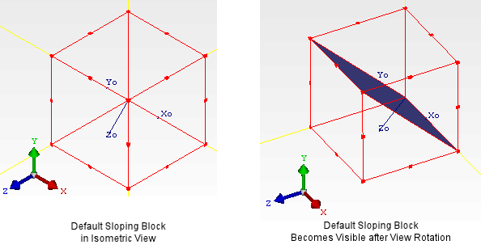

The
default Sloping Block is a thin angled plate with a 45 degree slope
which has a smooth, non-conducting surface.
Procedure
- Select an assembly in the data tree.
- In the New Object Palette, choose Project Manager
Create or Drawing Board Create and double-click the Sloping Block icon.
Results
In Isometric View, other than the local Zo
axis, the default Sloping Block is not visible as it lies in the
plane of view. To view the default Sloping Block, set Solid rendering
and rotate the view, see Figure 1.
Figure 1. Isometric Views of Default Sloping Block